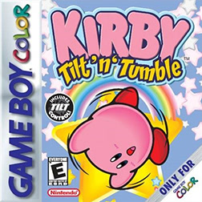
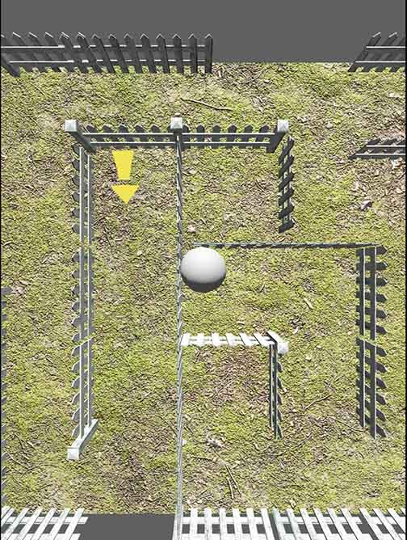
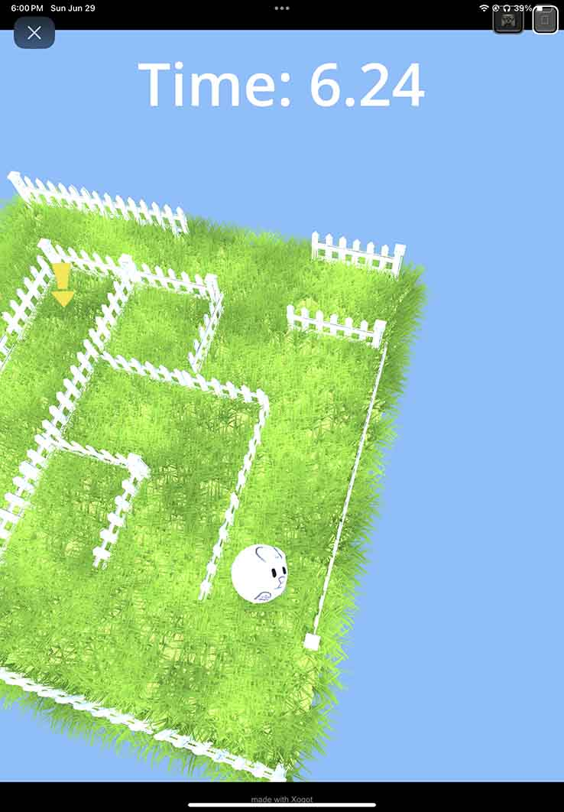

My Second Ever Game Jam!
About the host
How I found Xogot
Awhile ago I was working on assets for my upcoming game Mind Garden. Procreate has always been my digital drawing app of choice for it’s simple UI yet deep toolset. It’s an Ipad exclusive that’s just that good. I’m not the only one who believes this- to give you an idea, think about this: Procreate has become a major factor in buyer’s decision between an Apple or Android Tablet. I guarantee that if you have a friend with an Ipad they’ve - at the very least - thought about buying Procreate. So why am I telling you this? Well, I and many game developers use this app for asset creation. And similarly, I and many game developers have run into it’s pitfall. A pitfall not unique to the app but the entirety of IpadOS:
Sharing between your Ipad and main machine.
Ugh I can’t stress the amount of unneccesary waiting periods between export and it showing up my Macbook. Then sometimes I realize the background isn’t transparent or I made the resolution too big. Or, worst of all, one device is dead so I can’t share it. Sure, Ipad has tools like Airdrop to make sharing between your main device and Ipad more seamless (if you have a pc it’s not seamless at all); but what could be more seamless than your game engine of choice running on your Ipad - with Procreate!? That’s one less device to worry about and hundreds less file transfers. So, I did what I always do and searched something like this “godot on ipad” . I was not expecting anything - which was good because had I searched only a couple days earlier there’d have been nothing worthwhile. But I was lucky, it appeared - one of the last suggested results.. This blog post.
Fun Fact: I was the one who suggested drag and drop of files from other apps to Xogot as I helped test prerelease… not to brag or anything. 🤓
Xogot and the Team
It’s safe to say I was elated. Not only was Xogot (called IGodot earlier) a port of the best open source game engine.. ever. But it was also redesigned for touch controls using Swift Ui. I followed the progress carefully and ended up joining their discord, Testflight, and helped them test. Release came and they knocked it out of the park.
The Jam
I suggested a game jam in their discord to drive community engagement and.. for fun! Another person suggested it - after me ofc -and Joseph Hill, a developer on the Xogot team, said he was looking into it. A couple weeks later, it was announced! I joined immediately.
My tools:
Going in.. I was prepared. Here’s a list of all my tools, with links - not affiliate. Prices are what I/family paid.
- Ipad Air 5 - I got a refurbished one for Christmas | ~$300 | Thanks Mom and Dad!
- Apple Pencil 2 - Bought this myself around the time I got the Ipad. Really great target deal. | $80
- Logitech Keyboard and Trackpad for Ipad Case - Got one that was used in testing Xogot | Free from the Xogot Team, thanks again!
- Working Copy - I’m apart of Github Student Developer which gives me this for free! Highly recommend for version control on Ipad. | Free
- Xogot - jam members get a free month!
- Procreate - already gushed over this. | Bought it years ago for $10
- Blender - amazing open source software | Free
- Macbook Air M1 - my baby. she’s great but needs more ram and storage 😭 | ~$
- Notion - Also got this for free from Github Student Developer. Wasn’t very helpful tbh
My Process:
Brainstorming
The theme was announced while I was laying on a hammock in the sun. “You’re holding it wrong.” Hmmm, no ideas. I decided to look it up to spark inspiration. A meme of Steve Jobs explaining an Apple Gate flooded the results. This had to be a reference to that. Whelp, still nothing. As I lay in the hammock something kept tickling my brain - Kirby. Kirby Tilt ’n Tumble.
Kirby Tilt ’n Tumble is an acclerometer based platformer for the Game Boy. I was not around to play it originally but I recently played it on my Switch with NSO. I decided I’d make something similar.
Part 1: Motion on web.
Game jams are special in the fact that they usually use a site called Itch.io to host. Itch allows web game embeds which makes it perfect for jams. Think about it like this: if you were a judge for a game jam and you need to download to play all the submissions, what are the chances you’d end up with malware? More than 0. So, most game jam games opt to create a web build which.. introduces alot of headaches. My main mechanic, tilt based platforming, requires access to a player’s accelerometer. Getting access to a user’s accelerometer data on web is not easy, as I’d soon learn. I had a hutch it wouldn’t be as simple as Input.get_accelerometer() but no clue it’d go as deep as it did. With that hutch in mind, I started out with a simple test to see if it’d be viable. I used the afformentioned function and it worked in Xogot - great! Then, I exported to web and….. nope. I looked into Xogot’s settings and there was a get accelerometer data checkbox that was not checked. Check, retry, still no luck on web. An hour’s worth of research later I learned this: you need to get the user to hit a button prompt which initiates an OS request for data on behalf of the game. With that in mind I clumsily wrote a script which would do that. Making use of Javascript bridge singletons and stuff wayyyy over my head. It worked but wasn’t scalable. As I looked more into it I opened Discord to see a reply to my plee for help in the Xogot server. Someone had already made a Web support class on github - Godsend. Thank you random person. I downloaded and made it ‘it’s own autoload. Exhale. That was the abridged version of figuring this out - more twist, turns, headaches, and days were brushed over for the sake of this short paragraph.
Part 2: 3D Visuals
A quirk of mine as a developer is that once I have the very least of mechanics done, I need to make it pleasing to the eye. This was a struggle. For some reason, I decided to not only introduce web mechanics I couldn’t figure out but also 3D visuals, something I’d only tested the waters in before. And gosh, original attempts looked BAD. Mike Wake - a team member for my first jam - can attest to this. Here’s screenshot one:
“I’d say the main offenders here are the lack of shadows and the overwhelmingly detailed ground” - Mike
Great, actionable advice. I started by messing with the lighting. I turned on toon diffuse lighting for all objects and removed that ugly grass texture that’d been asking to go. I also made all the background this pretty blue color, I have no idea why but it worked! Then, the cherry on top was Breath of the Wild style MulitMesh Grass. This really rounded everything together.
For 2 models in particular I used Nomad Sculpt, a 3D modeling Ipad app. I then exported from Nomad to Procreate for drawing textures. This is where Rollbit was concieved. I was inspired by these sphere animals I’ve seen on pinterest.
Part 3: Portability Wins
Time was ticking - I had 3 days left - and I had planned to be done before then. I’d be in the car on the way to the beach for vacation. Xogot really shined here. I was able to make 3 entire levels in 6 hours, in the car, on my Ipad.
Final Thoughts
This was a really fun activity and I learned alot. The Xogot team did a great job and I encourage anyone to check them out.
Thanks for reading!